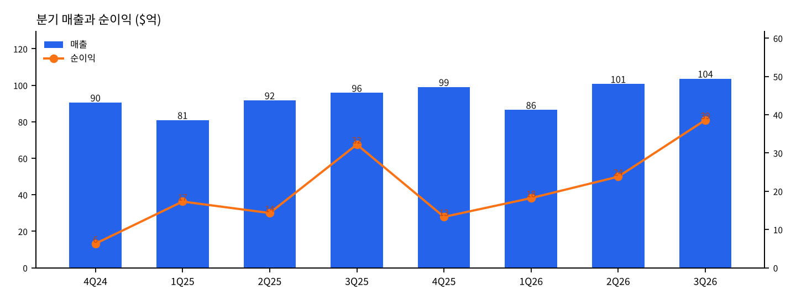
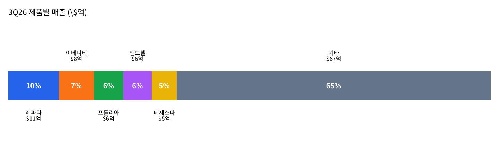
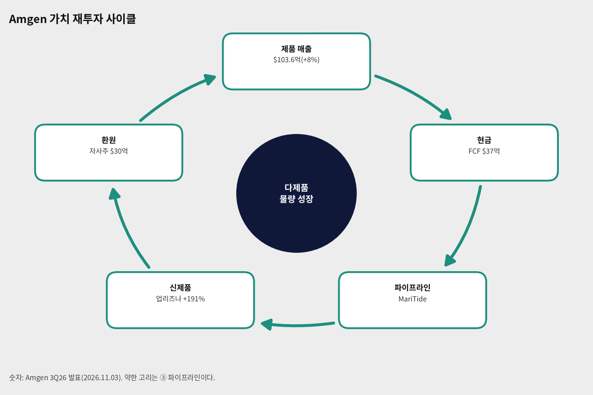

Amgen은 심혈관(레파타)·골질환(이베니티·프롤리아)·염증(테제스파)·희귀질환·항암 제품을 파는 회사다. 바이오시밀러와 비만 후보 MariTide 개발도 한다.
| 항목 | 내용 |
|---|---|
| 종목 | Amgen (AMGN) · NASDAQ · 헬스케어(바이오제약) · 캘리포니아 사우전드오크스 |
| 멀티플 | PER·PEG는 조정 EPS 기준(08 항목 표) |
| 최근 분기(3Q26) | 매출 $103.6억, 비GAAP EPS $6.45 |
| 가이던스(FY26) | 매출 $389~397억, 비GAAP EPS $22.90~23.70 |
| 직원 수 | 약 31,500명(트레이딩뷰) |
| 직책 | 인물 | 역할·특징 |
|---|---|---|
| 회장·CEO | 로버트 브래들웨이(Robert Bradway) | '상업 포트폴리오와 후기 파이프라인이 향후 10년 넘는 성장을 뒷받침한다'고 설명 |
| CFO | (확인 필요) | (이번 조사에서 확인하지 못함) |
경영 스타일: '다제품 성장 + 파이프라인 투자'. 17개 제품의 물량 성장으로 매출을 늘리고 비만(MariTide) 등 후기 파이프라인에 투자한다.
단백질 치료제와 바이오시밀러(아메비타 등)를 함께 운영한다.
MariTide(비만) 등 후기 임상 후보를 키운다.
다음 실적발표는 세 가지 질문에 답하는 자리다.
1. 프롤리아 감소(-45%)를 신제품이 메우나?
2. MariTide 임상 결과가 나오나?
3. 영업이익률 47.3%가 유지되나?
한 줄 판정 규칙: 첫 질문(프롤리아 감소 상쇄)과 둘째 질문(마진)이 유지되면 약한 고리(파이프라인 불확실성)가 풀린다.
일정: 4Q26 실적 발표는 트레이딩뷰 기준 2027.02.09(확인 필요).
| 분기 | 매출 | 순이익 | EPS | 조정 EPS | 특이 사항 |
|---|---|---|---|---|---|
| 4Q24 | $90.5억 | $6.3억 | 1.16 | 5.31 | |
| 1Q25 | $80.9억 | $17.3억 | 3.20 | 4.90 | |
| 2Q25 | $91.7억 | $14.3억 | 2.65 | 6.02 | |
| 3Q25 | $95.8억 | $32.2억 | 5.93 | 5.64 | |
| 4Q25 | $99.0억 | $13.3억 | 2.45 | 5.29 | |
| 1Q26 | $86.5억 | $18.2억 | 3.34 | 5.15 | |
| 2Q26 | $100.7억 | $23.8억 | 4.37 | 6.29 | |
| 3Q26 | $103.6억 | $38.6억 | 7.08 | 6.45 | 비GAAP EPS $6.45(+14%), GAAP $7.08(+19%) |
3Q26 매출 $103.6억(+8%), GAAP 순이익 $38.6억(EPS $7.08, +19%), 비GAAP EPS $6.45(+14%)(회사 발표 2026.11.03). 일부 분기 GAAP EPS는 일회성 항목으로 큰 폭 변동한다. 매출·순이익·EPS(GAAP 희석)는 트레이딩뷰 스캐너, 조정 EPS는 트레이딩뷰 실적 페이지의 Reported 값이다. 분기 정렬은 오래된 분기→최신이다.

흐름 요약: 최근 분기 매출은 $103.6억로 전년 동기 $95.8억 대비 +8.1%, 순이익은 $38.6억(전년 $32.2억)다. 최근 4분기 GAAP EPS는 $17.24, 조정 EPS는 $23.18다.
| 제품 | 내용 | 3Q26 매출 | 비고 |
|---|---|---|---|
| 레파타 | 심혈관 | $10.85억 | +37% |
| 이베니티 | 골다공증 | $7.51억 | +39% |
| 프롤리아 | 골다공증 | $6.32억 | -45% |
| 엔브렐 | 염증 | $6.11억 | +5% |
| 테제스파 | 천식 | $5.38억 | +43% |
| 기타(내 계산) | 총액 − 위 제품 | $67.4억 | 총 $103.6억 |

위 5개 제품이 총매출의 약 35%(내 계산)다. 나머지는 다수 제품으로 분산되어 있다.
Amgen은 '심각한 질병 환자를 위해 혁신 치료제를 개발·생산해 전달하는 것'을 목표로 한다.
| 축 | 내용 |
|---|---|
| 제품 | 17개 제품 두 자릿수 성장 |
| 파이프라인 | MariTide 등 |
| 환원 | 자사주 매입 $30억 이내 |

| 이동평균 | 값 | 종가 대비 | 위치 |
|---|---|---|---|
| 5일선 | $459.37 | -3.4% | 종가 아래 |
| 20일선 | $458.95 | -3.3% | 종가 아래 |
| 50일선 | $428.15 | +3.7% | 종가 위 |
| 100일선 | $413.26 | +7.4% | 종가 위 |
| 200일선 | $382.70 | +16.0% | 종가 위 |
52주 고가 $483.99(2026-11-05)·저가 $312.39(2025-12-11) 범위에서 종가 $443.89는 50일선, 100일선, 200일선을 웃돌고 5일선, 20일선은 밑돈다.
| 규칙 | 기준 | 현재 값 | 신호 |
|---|---|---|---|
| 장기 추세 필터 | 종가 vs 200일선 | $443.89 > $382.70 | 매수 |
| 중장기 교차 | 50일선 vs 200일선 | $428.15 > $382.70 | 매수 |
| 단기 교차 | 20일선 vs 50일선 | $458.95 > $428.15 | 매수 |
| 돈키언 채널 | 55일 고가 $483.99 / 저가 $374.46 | 중간값 $429.23 위 | 매수 |
| 1개월 모멘텀 | 21거래일 수익률 | +1.1% (기준 $438.94) | 매수 |
| 3개월 모멘텀 | 63거래일 수익률 | +2.3% (기준 $433.73) | 매수 |
| 6개월 모멘텀 | 126거래일 수익률 | +33.9% (기준 $331.57) | 매수 |
| 12개월 모멘텀 | 252거래일 수익률 | +29.9% (기준 $341.71) | 매수 |
| 종합 (8개 평균) | +1.00 | 강한 매수 |
해석: 매수 신호 8개(장기 추세 필터, 중장기 교차, 단기 교차, 돈키언 채널, 1개월 모멘텀, 3개월 모멘텀, 6개월 모멘텀, 12개월 모멘텀), 매도 신호 0개(없음). CTA 점수 +1.00(강한 매수). 14일 ATR $12.45 (2.8%), 52주 고가 $483.99 · 저가 $312.39.
| 가격 | 기준 | 무엇이 바뀌나 |
|---|---|---|
| $483.99 | 55일 고가 | 돌파 시 채널 상단 갱신 |
| $438.94 | 1개월 모멘텀 기준가 | 종가가 이 가격 위면 1개월 신호 매수 |
| $433.73 | 3개월 모멘텀 기준가 | 종가가 이 가격 위면 3개월 신호 매수 |
| $429.23 | 돈키언 중간값 | 55일 채널 중간값 위/아래로 신호가 바뀜 |
| $382.70 | 200일선 | 종가가 이 선 위/아래인지로 장기 추세 신호가 바뀜 |
| $374.46 | 55일 저가 | 이탈 시 채널 하단 갱신 |
| $341.71 | 12개월 모멘텀 기준가 | 종가가 이 가격 위면 12개월 신호 매수 |
| $331.57 | 6개월 모멘텀 기준가 | 종가가 이 가격 위면 6개월 신호 매수 |
가격 수준은 신호가 바뀌는 기준선일 뿐 진입·청산 가격 제안이 아니다. 20일/50일 교차는 이동평균 자체가 움직여 단일 가격으로 표시하지 않았다. 일봉·주봉은 종가 기준 직접 계산(고저 데이터 미사용)이다.
| 악재 요인 | 내용 | 강도 |
|---|---|---|
| 프롤리아 바이오시밀러 | $6.32억(-45%) | 중간 |
| 테페자 감소 | $5.26억(-6%) | 중간 |
| FCF 감소 | $37억(전년 $42억) | 중간 |
| FDA 이슈 | 타브네오스 관련 FDA 협의 | 중간 |
| 티커 | 회사 | PER(TTM) | PEG | P/S | EPS 성장(YoY) |
|---|---|---|---|---|---|
| AMGN | Amgen | 19.1배 | 3.20 | 6.16배 | +6% |
| GILD | Gilead | – | – | 6.86배 | -149% |
| REGN | Regeneron | 20.9배 | 2.50 | 5.99배 | +8% |
| ABBV | AbbVie | 49.2배 | 0.15 | 7.86배 | +338% |
| LLY | Eli Lilly | 45.4배 | 0.92 | 14.63배 | +51% |
비교 결론: Amgen PER은 Gilead·Eli Lilly보다 낮고 AbbVie보다 낮다.
Amgen은 FCF 약 $96억(TTM)이지만 부채 $540억으로 순부채가 크다.
| 지표 | 값 | 출처 | 해석 |
|---|---|---|---|
| 현금·단기투자 | $132억 | 트레이딩뷰 스캐너(최근 분기) | |
| 총부채 | $540억 | 트레이딩뷰 스캐너(최근 분기) | |
| 순부채(부채−현금) | $408억 | 내 계산 | 현금 대비 부채 부담 |
| 잉여현금흐름(TTM) | $96억 | 트레이딩뷰 스캐너 | |
| TTM 매출 | $390억 | 트레이딩뷰 스캐너 |
| 기준 | 매출 | P/S | 비고 |
|---|---|---|---|
| 내 계산(종가 ÷ 최근 4분기 매출 합계) | $389.8억 | 6.16배 | 시총은 정렬용 데이터에서만 사용 |
| 동종(트레이딩뷰) | – | GILD 6.86배 · REGN 5.99배 · ABBV 7.86배 · LLY 14.63배 | 11.19 |
해석: P/S 6.41배는 Gilead(6.86배)와 비슷하다.
EBITDA는 영업활동의 현금 창출력을 보는 지표이고, PEG는 PER을 EPS 성장률로 나눈 값이다. EBITDA·FCF는 트레이딩뷰 TTM 값이다.
| 지표 | 값 | 산출 |
|---|---|---|
| EBITDA(TTM) | $184억 | 트레이딩뷰 스캐너 |
| EBITDA 마진 | 47.2% | EBITDA ÷ TTM 매출(내 계산) |
| FCF 마진 | 24.6% | FCF ÷ TTM 매출(내 계산) |
| PER(GAAP TTM) | 25.7배 | $443.89 ÷ $17.24 |
| PER(조정 TTM) | 19.1배 | $443.89 ÷ $23.18 |
| 방식 | PER | EPS 성장률 | PEG | 판정 |
|---|---|---|---|---|
| 조정 EPS (TTM $23.18) | 19.1배 | +6% ($21.87 → $23.18) | 3.20 | 기준 초과 |
| GAAP EPS (TTM $17.24) | 25.7배 | +33% ($12.94 → $17.24) | 0.77 | 투자 적격 |
판정: 조정 EPS 기준 PEG 3.20 → 1.0 초과 PEG 기준은 1.0 이하 투자 적격, 0.5 이하 적극 매수다. EPS 성장률은 최근 4분기 EPS 합계를 직전 4분기 합계와 비교한 값(내 계산)이고, 일회성 항목이 있으면 조정 EPS 행을 함께 본다.

Amgen의 사이클은 제품 매출 → 현금 → R&D·파이프라인 → 신제품 → 환원이다.
| 고리 | 현재 숫자 | 고리 강도 | 약해지는 신호 |
|---|---|---|---|
| ① 제품 매출 | $103.6억(+8%) | 강함 | 프롤리아 |
| ② 현금 | FCF $37억 | 보통 | 운전자본 |
| ③ R&D·파이프라인 | MariTide 등 | 진행 중 | 임상 위험 |
| ④ 신제품 | 업리즈나·임델트라 급성장 | 강함 | 경쟁 |
| ⑤ 환원 | 자사주 $30억 이내 | 보통 | 부채 |
사이클의 특징: 가장 약한 곳은 ③ R&D·파이프라인이다. 비만 후보 결과가 변수다.